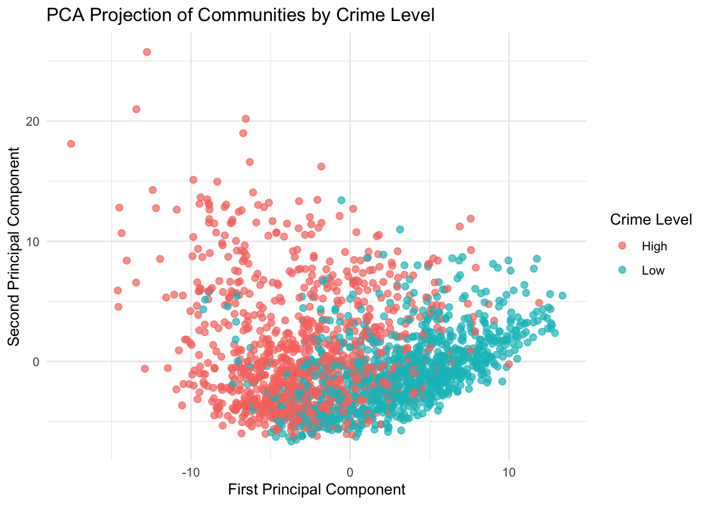

| Quantity | Value |
|---|---|
| Number of communities | 1994 |
| Number of predictors used | 122 |
| Response variable | ViolentCrimesPerPop |
| Classification rule | Above median = High; at or below median = Low |
| High crime communities | 993 |
| Low crime communities | 1001 |
Crime Classification in U.S. Communities
Introduction
Crime rates vary widely across communities, but these differences are not random. They are often connected to broader socioeconomic conditions such as income, housing, employment, family structure, urban density, and demographic composition. The goal of this project is to investigate whether these community-level characteristics contain enough multivariate structure to distinguish between higher-crime and lower-crime communities.
The dataset used in this project is the Communities and Crime dataset from the UCI Machine Learning Repository. Each observation represents a U.S. community, and the variables describe demographic, economic, housing, policing, and population characteristics. The original response variable is ViolentCrimesPerPop, a normalized measure of violent crimes per population.
Rather than treating this only as a regression problem, this project reframes the outcome as a classification problem. Communities with violent crime above the median are labeled as High crime, while communities at or below the median are labeled as Low crime. This allows the analysis to focus on whether socioeconomic structure can separate communities into meaningful crime-level groups.
The main research question is:
- Can we tell which communities have high vs low crime based on their characteristics?
To answer this question, I use two statistical methods: Principal Component Analysis (PCA) and Linear Discriminant Analysis (LDA) / Quadratic Discriminant Analysis (QDA). PCA is used to reduce the dimensionality of the dataset and visualize structure. LDA and QDA are used to evaluate predictive classification performance.
Data Prep
The identifier variables were removed because the goal is not to model geographic labels directly, but rather to study whether measurable community characteristics explain differences in crime level. Missing numerical values were replaced using mean imputation, which provides a simple and reproducible way to retain observations without adding additional modeling complexity.
Methods
The analysis uses two main approaches.
First, PCA is used to reduce the high-dimensional predictor space into a smaller number of uncorrelated components. Since the dataset contains many socioeconomic variables, PCA helps identify whether the communities have lower-dimensional structure. All predictors were standardized before PCA so that variables measured on different scales contribute comparably.
Second, LDA and QDA are used for supervised classification. Both methods attempt to classify communities as high or low crime based on the first 10 principal components. The use of principal components helps avoid fitting LDA and QDA directly on a large number of correlated predictors. LDA assumes a shared covariance matrix across groups and produces a linear decision boundary. QDA allows different covariance matrices by group and produces a more flexible nonlinear boundary.
Model assessment is performed using an 80/20 train-test split. LDA and QDA are trained on 80% of the data and evaluated on the remaining 20%.
Results
Principal Component Analysis
| Principal_Component | Proportion_Variance_Explained | Cumulative_Variance_Explained |
|---|---|---|
| PC1 | 0.209 | 0.209 |
| PC2 | 0.142 | 0.350 |
| PC3 | 0.087 | 0.437 |
| PC4 | 0.068 | 0.506 |
| PC5 | 0.058 | 0.563 |
The first principal component explains about 20.9% of the variation in the standardized predictors, while the second explains about 14.2%. Together, the first two components account for roughly 35% of the total variation. While this is not the majority of the variation, it is still substantial given the high dimensionality of the dataset, which contains over 100 variables. This indicates that a meaningful portion of the differences between communities can be summarized using just a few underlying patterns.

The PCA plot shows a clear pattern of separation between high and low crime communities, particularly along the first principal component. Communities with lower crime levels tend to appear on the right side of the plot (higher PC1 values), while higher crime communities are more concentrated on the left (lower PC1 values). Although the separation is not perfect, the overall structure suggests that crime level is strongly related to an underlying combination of community characteristics.
To better understand what this primary direction represents, the largest absolute loadings for the first principal component are shown below.
| Variable | Loading | Abs_Loading |
|---|---|---|
| medFamInc | 0.179 | 0.179 |
| medIncome | 0.178 | 0.178 |
| PctKids2Par | 0.174 | 0.174 |
| pctWInvInc | 0.172 | 0.172 |
| PctPopUnderPov | -0.172 | 0.172 |
| PctFam2Par | 0.171 | 0.171 |
| PctYoungKids2Par | 0.170 | 0.170 |
| perCapInc | 0.165 | 0.165 |
| pctWPubAsst | -0.163 | 0.163 |
| PctHousNoPhone | -0.161 | 0.161 |
These loadings help interpret PC1 as a broad socioeconomic dimension. Variables with large loadings contribute strongly to the direction where high- and low-crime communities separate most clearly.
Classification Results
PCA showed that there was structure in the data and that high and low crime communities appeared to separate in a lower dimensional space. This motivated using LDA and QDA to test if that structure could be used for accurate classification.
| Method | Accuracy |
|---|---|
| LDA | 0.809 |
| QDA | 0.714 |
LDA achieved an accuracy of 80.9%, while QDA achieved an accuracy of 71.4%. This means that LDA correctly classified about four out of five test-set communities as high or low crime using only the first 10 principal components.
The stronger performance of LDA suggests that the separation between high and low crime communities is approximately linear in the reduced PCA space. QDA is more flexible because it estimates separate covariance structures for each class, but in this case that flexibility did not improve performance. The lower QDA accuracy suggests that QDA may be overfitting or estimating the group covariance matrices less stably.
| Predicted | High | Low |
|---|---|---|
| High | 154 | 32 |
| Low | 44 | 168 |
| Predicted | High | Low |
|---|---|---|
| High | 101 | 17 |
| Low | 97 | 183 |
The confusion matrices show that LDA has relatively balanced performance across both classes. It correctly classified 154 high crime communities and 168 low crime communities in the test set. QDA correctly classified many low crime communities, but it misclassified a larger number of high-crime communities as low crime. This supports the conclusion that LDA provides the more reliable classification rule for this dataset.
Discussion
The results provide consistent evidence that socioeconomic and demographic characteristics contain meaningful information about community crime levels. PCA showed that the first two principal components reveal visible structure in the data, with high and low crime communities separating most clearly along PC1. LDA then showed that this structure is predictive, achieving 80.9% accuracy on the held-out test set.
One important finding is that LDA outperformed QDA. This suggests that a simpler linear boundary was more effective than a more flexible quadratic boundary. In practical terms, this means that the difference between high- and low-crime communities may be captured reasonably well by a linear combination of the principal components. QDA may have been too flexible for this setting, especially because it requires estimating separate covariance matrices for each group.
There are several limitations. First, the high and low crime labels were created using a median split. This makes the classification task clean and balanced, but it also simplifies a continuous outcome. Communities just above and just below the median may be very similar in actual crime rate but placed into different groups. Second, missing values were handled with mean imputation, which is simple but may reduce variability. Third, PCA improves visualization and reduces dimension, but principal components are less directly interpretable than original variables. Finally, this analysis is predictive and descriptive, not causal. The results show that socioeconomic variables are associated with crime level, but they do not prove that any specific variable causes crime to increase or decrease.
Overall, this project shows that a relatively small set of statistical tools can provide a clear picture of a complex dataset with many features. PCA revealed the main structure and LDA provided strong classification performance. Together, these methods suggest that crime levels are closely connected to underlying socioeconomic differences across communities.
Conclusion
This project investigated whether socioeconomic characteristics can distinguish high crime from low crime communities. The analysis found that they can. PCA showed visible separation between crime groups, LDA classified communities with 80.9% test accuracy.
The main conclusion is that community crime levels are not isolated from broader socioeconomic structure. Instead, high and low crime communities differ in systematic multivariate ways. While the analysis does not establish causation, it provides strong evidence that statistical methods from multivariate analysis can identify meaningful structure in real community level crime data.
Appendix A: Code
library(tidyverse)
library(MASS)
library(caret)
library(knitr)
library(kableExtra)
set.seed(123)
comm <- read.table(
"data/communities.data",
sep = ",",
na.strings = "?",
header = FALSE,
fill = TRUE,
stringsAsFactors = FALSE
)
names_raw <- readLines("data/communities.names")
attr_lines <- names_raw[grepl("^@attribute", names_raw)]
col_names <- attr_lines %>%
str_split("\\s+") %>%
map_chr(~ .x[2])
if(length(col_names) != ncol(comm)) {
stop("Mismatch between data columns and parsed names")
}
colnames(comm) <- col_names
comm <- comm %>%
dplyr::select(-state, -county, -community, -communityname, -fold)
comm_clean <- comm %>%
mutate(across(where(is.numeric), ~ ifelse(is.na(.), mean(., na.rm = TRUE), .))) %>%
mutate(
crime_level = ifelse(
ViolentCrimesPerPop > median(ViolentCrimesPerPop),
"High",
"Low"
) %>% factor()
)
X <- comm_clean %>%
dplyr::select(-ViolentCrimesPerPop, -crime_level)
y <- comm_clean$crime_level
X_scaled <- scale(X)
pca <- prcomp(X_scaled)
pve <- (pca$sdev^2) / sum(pca$sdev^2)
pca_df <- as_tibble(pca$x[, 1:2]) %>%
mutate(crime_level = y)
train_idx <- createDataPartition(y, p = 0.8, list = FALSE)
train_data <- pca$x[train_idx, 1:10]
test_data <- pca$x[-train_idx, 1:10]
train_labels <- y[train_idx]
test_labels <- y[-train_idx]
lda_model <- lda(train_data, grouping = train_labels)
lda_pred <- predict(lda_model, test_data)$class
lda_acc <- mean(lda_pred == test_labels)
qda_model <- qda(train_data, grouping = train_labels)
qda_pred <- predict(qda_model, test_data)$class
qda_acc <- mean(qda_pred == test_labels)